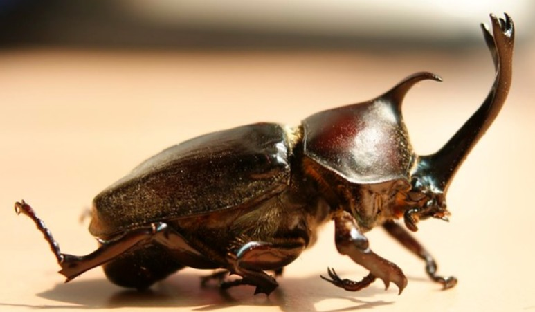
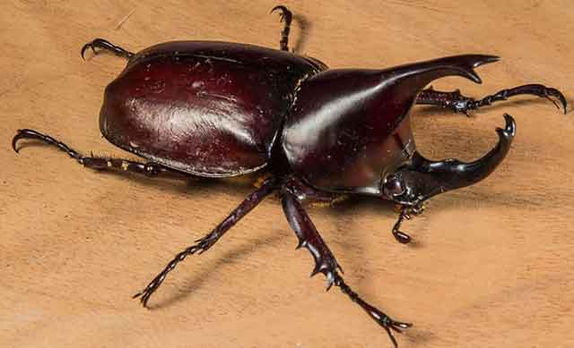
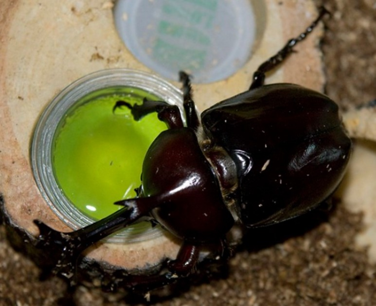
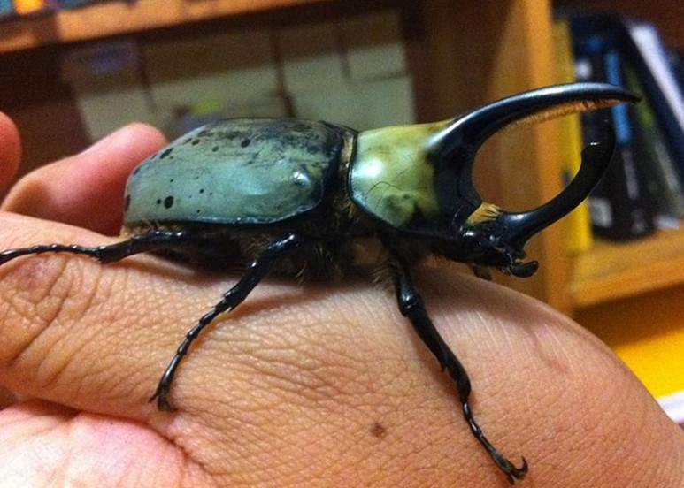

집에서 기를 수 있는 곤충, 어떤 종류가 있을까?
다양한 반려동물을 키우기 시작하면서 곤충을 기르고 싶어하는 사람도 적지 않게 늘고 있습니다. 일반적인 반려동물과 달리 공간을 많이 차지하지 않고 소음도 없어 실내에서 키우기 쉽기 때문입니다. 게다가 아이들이 직접 기르며 체험할 수 있다는 점에서도 곤충은 여러모로 긍정적인 영향을 줄 수 있는 데요. 그렇다면 집에서 기를 수 있는 곤충은 어떤 종류가 있는지 알아볼게요!
"집에서 키우기 쉬운 곤충"
1) 장수풍뎅이
집에서 키우기 쉬운 곤충으로는 대표적으로 '장수풍뎅이'가 있습니다. 아마 주변에서 곤충을 키운다는 소식을 들어본 적이 있다면, 장수풍뎅이를 키울 가능성이 큰데요. 장수풍뎅이는 습도나 온도에 민감하지 않고 적절히 먹이만 급여한다면 쑥쑥 자라는 것을 볼 수 있습니다.
2) 왕사슴벌레
보통 가정에서 키우는 벌레의 평균 수명이 1~2년이라면, 왕사슴벌레는 활동량이 적은 편이라 최대 5년까지 살 수 있습니다. 다만, 스트레스를 주게 되면 수명은 점점 짧아질 수 있으므로 왕사슴벌레가 장수하게 하려면 스트레스를 주지 않는 것이 중요합니다.
"곤충은 어떤 것을 먹을까?"
애벌레일 때는 애벌레가 잘 성장할 수 있게 톱밥을 깔아주는 것만으로도 충분합니다. 성충이 되었을 때는 소량의 젤리나 과일을 급여하는 것으로 성장을 도와줄 수 있습니다. 게다가 설탕, 꿀, 요구르트, 바나나 등 역시 먹이통에 넣고 함께 급여하면 성장에 힘을 받아 더욱더 튼튼해질 수 있습니다. 하지만 쉽게 썩는 음식은 많은 양 대신이 소량 급여해 간식의 개념으로 섭취할 수 있게 도와줘야 합니다. 음식이 썩거나 사육장을 더럽히게 되면 곤충이 스트레스를 받고 시름시름 앓을 수 있습니다.
"곤충을 키울 때 주의할 점!"
곤충의 세계에도 서열은 있는 법! 수컷 곤충끼리 두면 싸움이 날 수 있는 데요. 싸우다가 다리가 부러지기도 하고 밥을 못 먹어 죽기도 하므로 넓은 통 안에 서로 싸우지 않도록 개체 수를 조절하는 것이 좋습니다.
직사광선을 피하는 것도 중요합니다. 왕사슴벌레나 장수풍뎅이 모두 야행성이라 낮에는 잠을 자고 밤에는 활동하는 데요. 밤에 먹이를 먹고 활동하므로 직사광선을 피해 주는 것이 좋습니다.
톱밥도 상황에 따라 교체해 줘야 하는 데요. 젤리를 엎었거나 바닥이 심하게 젖어있을 때는 교체해 항상 건조한 상태를 유지할 수 있게 합니다.
곤충을 키우는 것은 아이들 학습에도 좋지만, 그 전에 하나의 생명체를 키우는 일입니다. 단순한 호기심에서 시작하기보다는 꾸준한 관심과 정성으로 키우려는 노력이 필요합니다. 수명이 길지 않은 곤충이기에 더욱더 재미로 시작해서는 안 되겠죠? 아이의 교육적 효과와 함께 건강한 곤충 기르기 학습을 이끌어 가는 노력도 필요합니다.
[출처] 집에서 기를 수 있는 곤충, 어떤 종류가 있을까? ｜ 작성자 땡구와뽀냥이